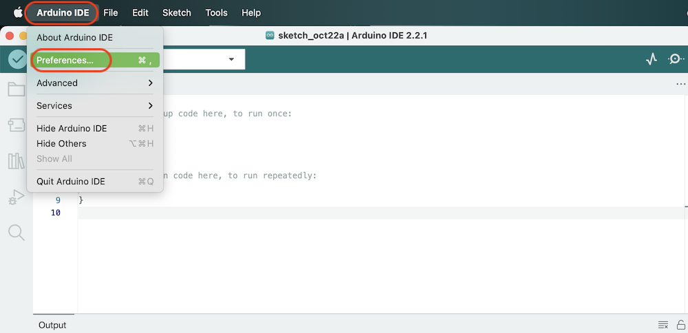
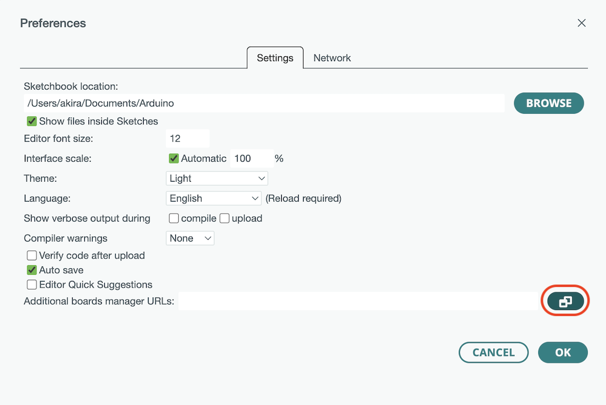
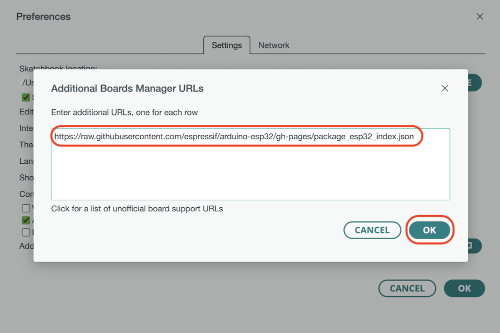
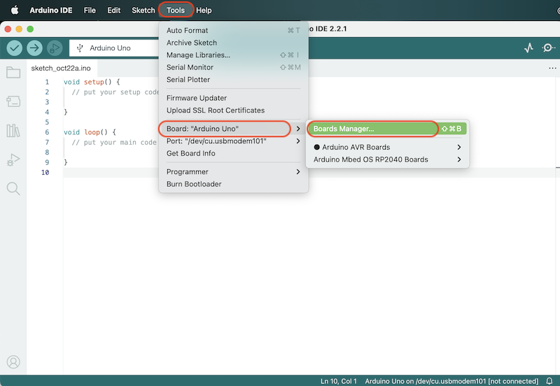
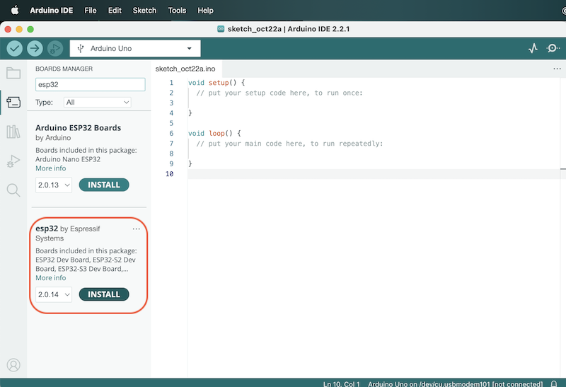
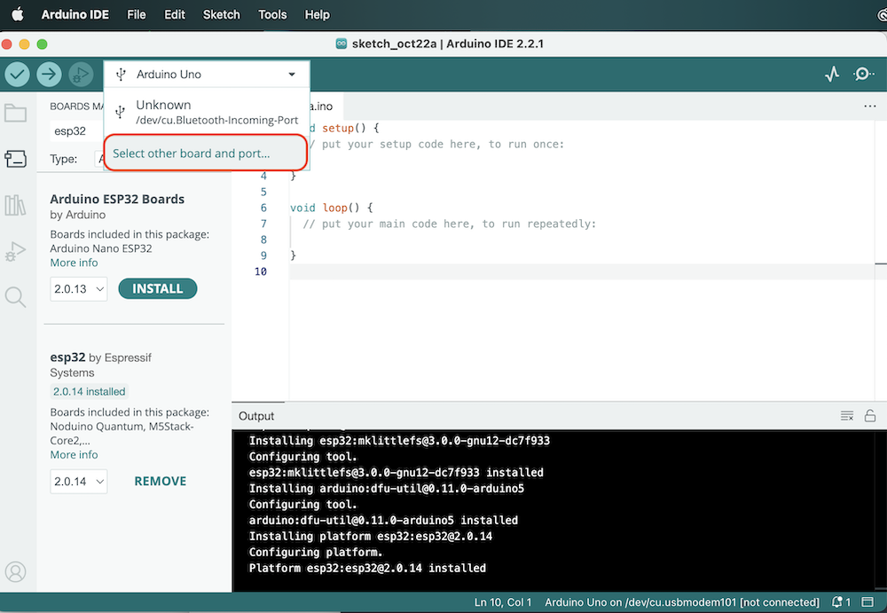
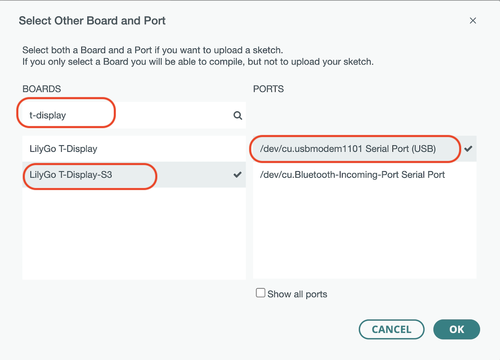
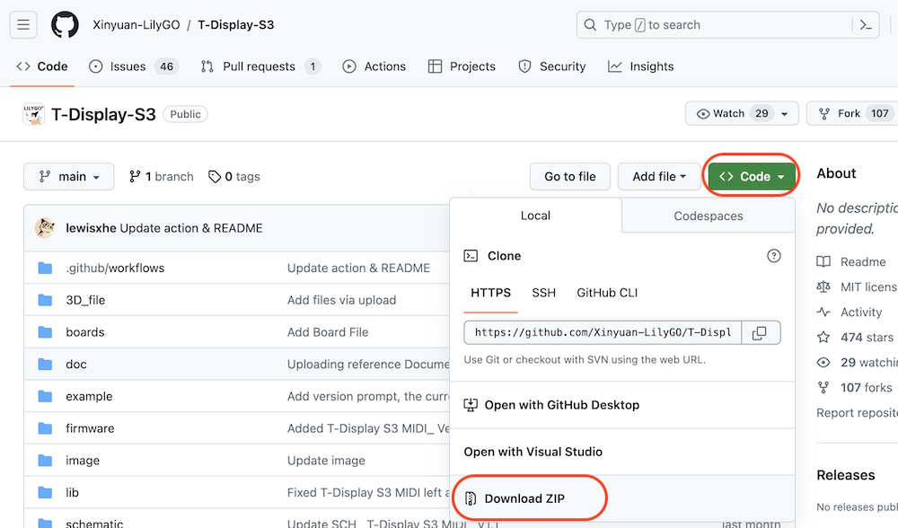
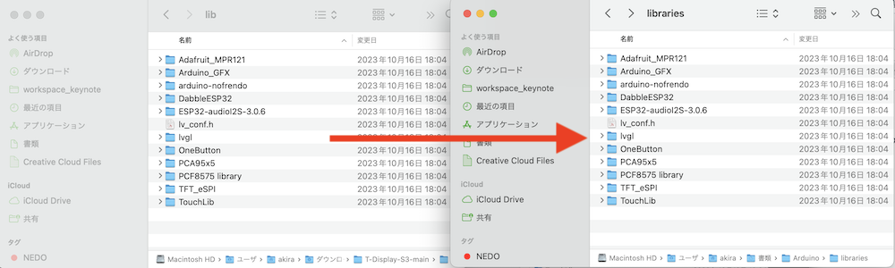

設定
Arduino IDEのボードの追加
Arduino 2.x系を前提に解説していきます。
Arduino IDEを起動し、メニューから[Arduino IDE]>[Preference]を選択します。


esp32のボードが追加できるように下記パッケージをコピー&ペーストします。
1 | |

Arduino IDEのメニューから[Tool]>[Board]>[Board manager]を選択します。

esp32 by Espressif systemを選択します。

Boardの設定をおこないます。

T-Display S3とUSB Type-Cとデバイスの接続ポートを選択します。

Arduinoライブラリの追加
https://github.com/Xinyuan-LilyGO/T-Display-S3より、パッケージをDownloadしてきます。

パッケージの解凍し、libフォルダのライブラリ一式を、C:\Users\YourName\Documents\Arduino\libraries にコピーします。
